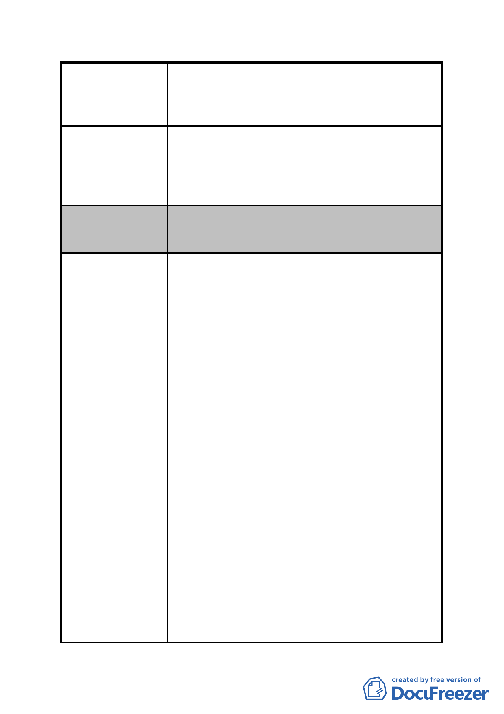

案名
建議辦法
委員會決議
編號
陳情理由
建議辦法
擬定臺北市內湖區蘆洲里附近工業區細部計畫暨變
更第 2 種工業區為科技工業區 B 區(特)、科技工業
區 B 區、道路用地、護坡用地及變更工業區(供輕工
業使用)為科技工業區 A 區(特)計畫案
本公司原有員工的生存機會。
懇請發展局准予將本基地所屬街廓(自溝渠用地以
西部分)排除在本次都市計畫變更案範圍外；或協
調局內相關單位（發展局八科、建管處建照科等）
召開研商會議准予本基地先行合併建廠。
所陳地點位處本計畫案市地重劃範圍內，本細部計
畫案業經 100 年 4 月 28 日第 623 次委員會審議修
正通過。
內湖區蘆洲里辦公處陳明霖里
長、內湖區林前區長金子、內湖民
13 陳情人 眾服務社李理事長春松、郝市長競
選後援會內湖區會長謝欽宗建築
師等人陳情人書
1. 建請『變更臺北市內湖區蘆洲里計畫案』重劃區
範圍土地開發時程修正為給予 20%基準容積獎
勵，惟須於重劃完成之日起 5 年內(原訂為 3 年)
取得建造執照，否則本時程獎勵予以取消；以增
加小地主們參與重劃之意願，加速完成開發，改
善市容環境及創造產值。
2. 為考量小汽車上下車空間及計程車排程空間須內
部化或地下化及地下室之開挖率僅有 65%之規
定，重劃區內必須鼓勵大規模基地面積之整併開
發，方能達到有效管理；為提昇小地主們整併意
願，應增加『基地開發規模面積獎勵』項目，『建
請本案重劃區內除都市更新容積獎勵已規範之有
關基地規模容積獎勵項目外，區內開發基地規模
達一千平方公尺以上者，另給予 5%~10%之基準容
積獎勵』。
1. 本地區都市計畫修正通過後，須多數土地所有權
人的同意，才能如期如質完成重劃，方能令本科
技工業區儘速開發，達成市府對本地區改善市容
- 39 -